This team project is to create a mobile version of USA Today. I'm was a part of "Team Glasses" with
a partner named William Bellos. He and I thought of ideas in order to make this version of the app.
There is no other teams competeing one after another. It is really everyone colaborating to make
different flows that has been broken to different teams.
I will only be posting the work I have done.
Problem
Problem
USA Today want to update their moblie app to make it more appealing to the younger
demographics between 22 - 35 years of age.
Goal
Tagging System
Improve USA TODAY by implementing a tagging system and redesigning the
UI to make the app more user friendly and customizable for each specific user.
Target Audience
USA TODAY needs to be made more appealing to a younger demographic
between 22 - 35 years of age.
Competitive Research
8Tracks
8Tracks is a web app that allows the user to listen to music.
The search bar allows the user to type in any word they want. While its being typed in,
a set of tags will appear to help the user to narrow down their choice.
When any word is type into the search bar, a gallery menu appears. It will allow the user
to click on an album and choose their type of music.
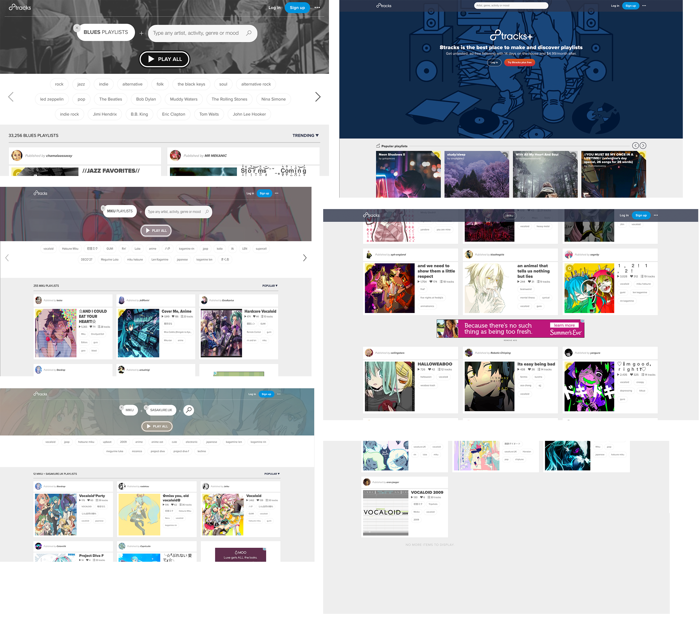
Analytical Research
Flipboard
Flipboard is a news app that users read. It has an onboard system that allow the users to choose
which topics they want.
The layout has a grid like structure that can help with the feeds page. I was not in charge of
it so that page will not be in this.
User Flow
Name:
Lisa Basil
User:
First Time User
Gender:
Female
Age:
26
Lisa finds a USA TODAY Life article on her Facebook feed and clicks on it.
She isn’t impressed by the page design, nothing feels innovative or new.
She doesn’t like the being bombarded with ads and many large pictures on the article.
She reads the article, then decides to browse the Life feed. She clicks on an article
that interests her, and decides to share it on Facebook.
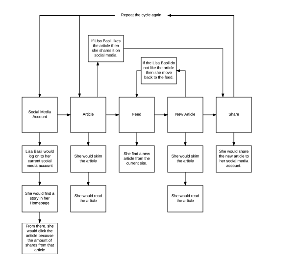
Name:
Frank Reynolds
User:
Power User
Gender:
Male
Age:
32
Frank wakes up early in the morning to read through his notifications on his phone.
He clicks on a USA TODAY push notification and reads the article, then decides to look through the Life feed.
He bookmarks several news stories to read later and shares one to Twitter and Facebook.
He looks at his recommended feed to see what news stories interest him.
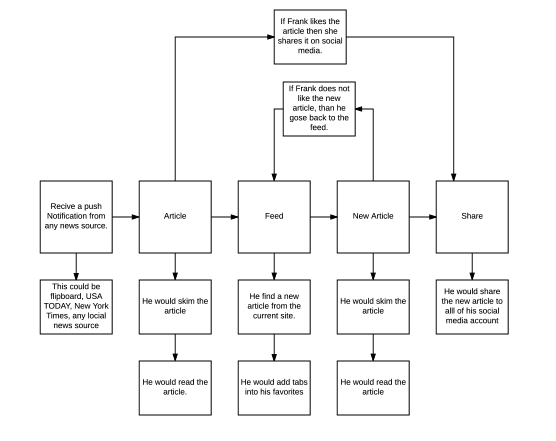
Work Flow
This is a blueprint of how the app is gonna go.
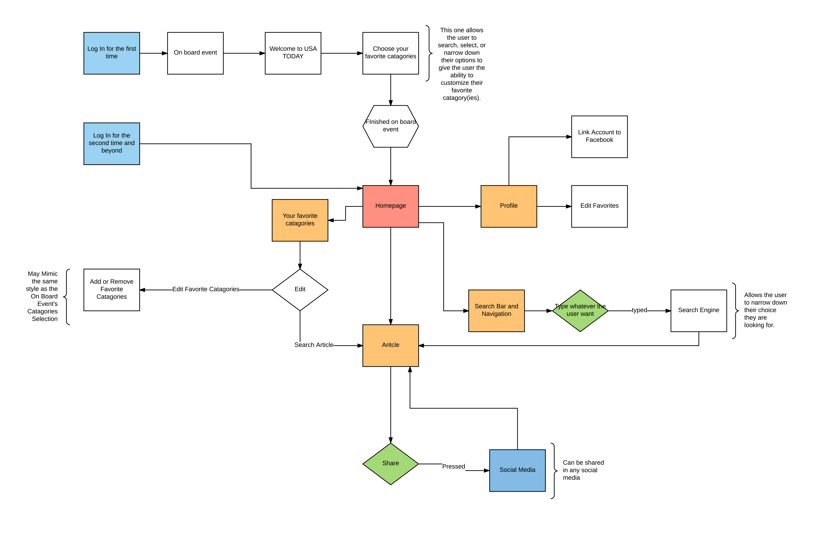
Sketch
Sketch Exploration - Onboard
This is an Exploration sketch of my first draft of the Onboard Page. This is
eriely similar to Flipboard. This was done on purpose just to get the idea out of my head.
This way, I can explore the idea easier and not have that looming over my head and think harder.
Sketch Exploration - Onboard
This is more exploration sketch of the Onboard Page. My thinking process was "How to make
the Onboard system better than Flipboard?" At the time, I was thinking about an Accordion, or
a paper fan. Because of how the paperfan and the accordion is folded.
The icon at the bottom left were to suppose to be topics. This is easily dropped because the
text itself was easily readable. If this isn't for mobile, it would have been used for navigation.
Sketch Exploration - Homepage
This is the homepage sketch.
This is more of an exploration of how this Homepage will function.
Sketch Exploration - Homepage
This the extention of the homepage.
It is more like how the sub article of the homepage will work.
Wireframes
Homepage
Version 1
This is my version of the homepage. We did made a previous homepage. But, I am not the original
creator.
This is more inspired to various websites that has diagnol lines. This will tell the readers
that there is more content as the user scrolls down.
The diagonal is also used to seperate the borders.
The hashtags was there to allow the user to save that topic into their intereset
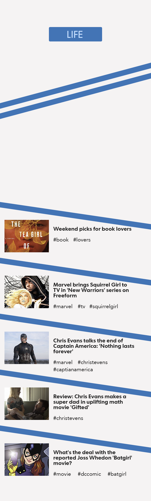
Version 2
The second version acutally looks better with these reasons.
The diagonals are lighter. Given less attention to them.
The diagonals also lead to other sub articles
The navigation was absent in version 1. It is now added.
The Sub-Navigation is readable. In version 1. The text were bold and
text were small. In this version, the text are bigger and the font weight is thin.
The Main Article is an interactive swipping that allow the user to find other main articles.
Version 3
The only thing that is different is the hashtags are removed. Because they were undergoing
a new design.
The layout is exacatly the same.
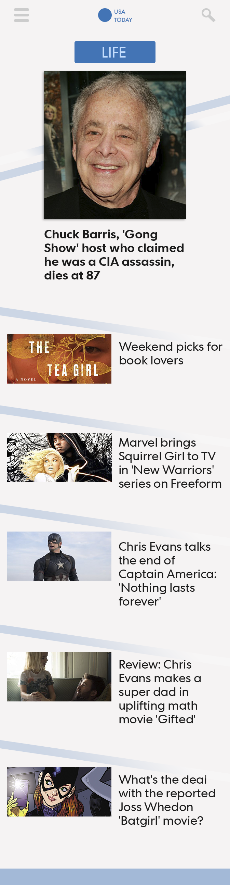
Version 4
This version has the updated tags that allow the user to see that the tags are clickable.
Comparing this to version 1 and 2, This version is also more seperate from the sub navigation.
Version 1 and 2 has no seperation. Even with the "#" next to the topic, it still looks like it
could be a part of the sub article.
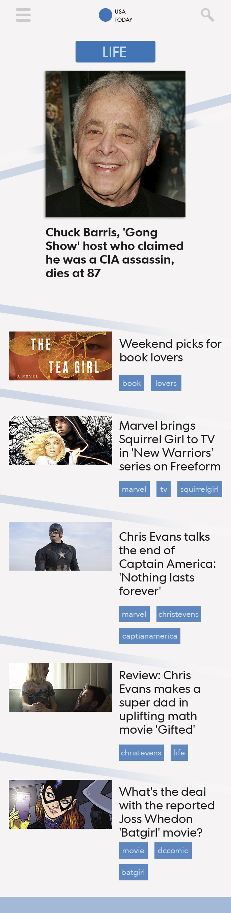
Version 5
This is the final version of the homepage.
With this one, user can flip between the homepage and the feeds page. The feeds page is
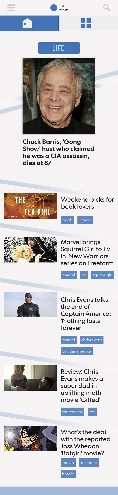
Onboard UI
Version 1
This is the version 1 of the onboard page.
This was layout similar to the flipboard because of how it look. However, the topics are very
low. So it looks disorganized.
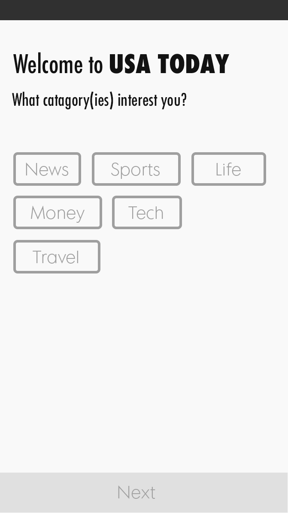
Version 1 part 2
This is still the version 1 of the onboard page.
This version is seperate from the first onboard page. This one allows the user to go deeper with
the topic that was chosen in the first page.
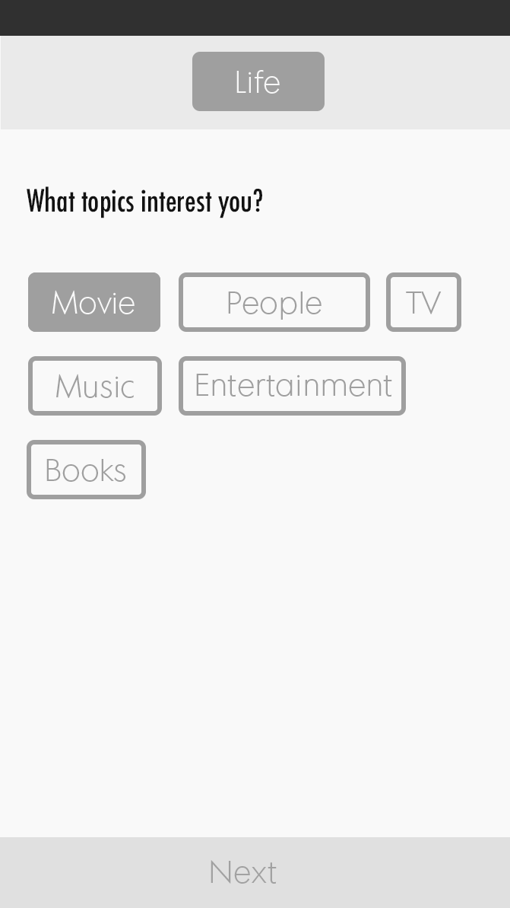
Version 1 part 2
This is still the version 1 of the onboard page.
This version is seperate from the first onboard page. This one allows the user to go deeper with
the topic that was chosen in the first page.
Article
Version 1
This is the version 1 of the onboard page.
This was layout similar to the flipboard because of how it look. However, the topics are very
low. So it looks disorganized.
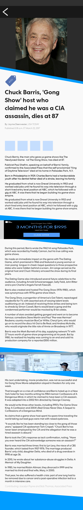
Main Composition
Homepage
Page 1
This is the final version of the homepage on a phone.
This is more inspired to various websites that has diagnol lines. This will tell the readers
that there is more content as the user scrolls down.
The diagonal is also used to seperate the borders.
The hashtags was there to allow the user to save that topic into their intereset
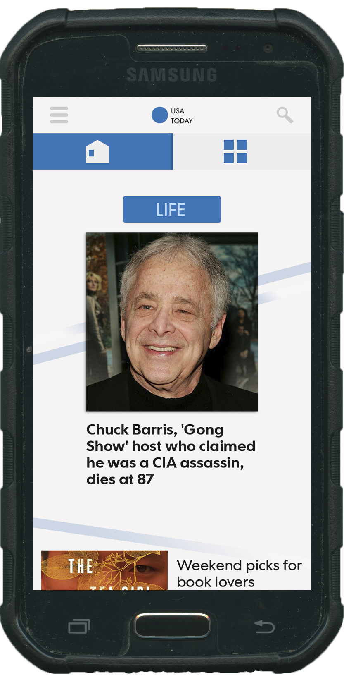
Onboard
Page 1
This is the final version of the homepage on a phone.
This is more inspired to various websites that has diagnol lines. This will tell the readers
that there is more content as the user scrolls down.
The diagonal is also used to seperate the borders.
The hashtags was there to allow the user to save that topic into their intereset
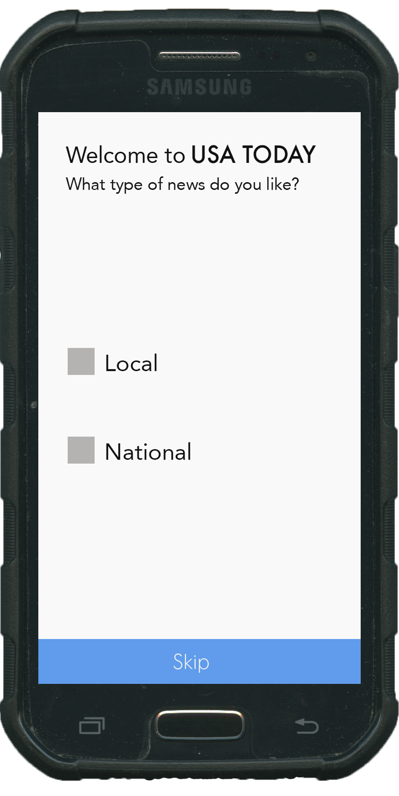
Article
Page 1
This is the final version of the homepage on a phone.
This is more inspired to various websites that has diagnol lines. This will tell the readers
that there is more content as the user scrolls down.
The diagonal is also used to seperate the borders.
The hashtags was there to allow the user to save that topic into their intereset
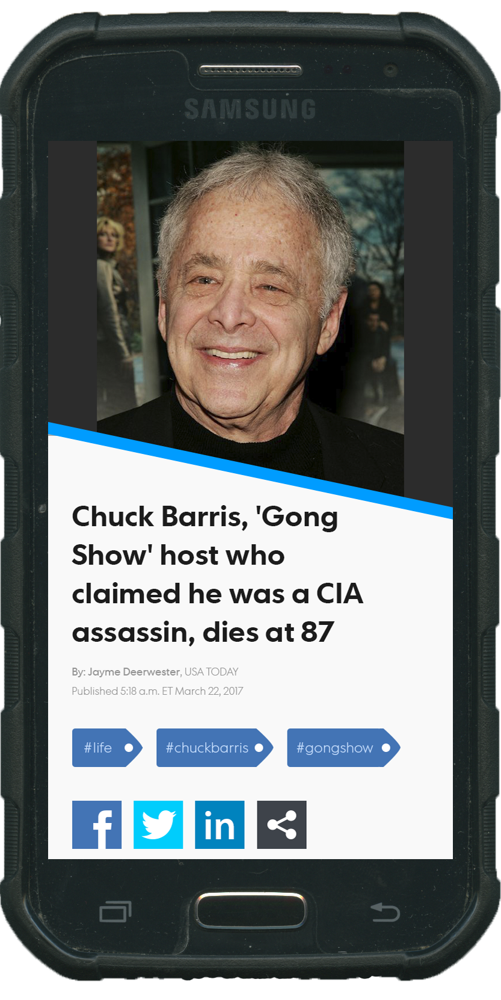
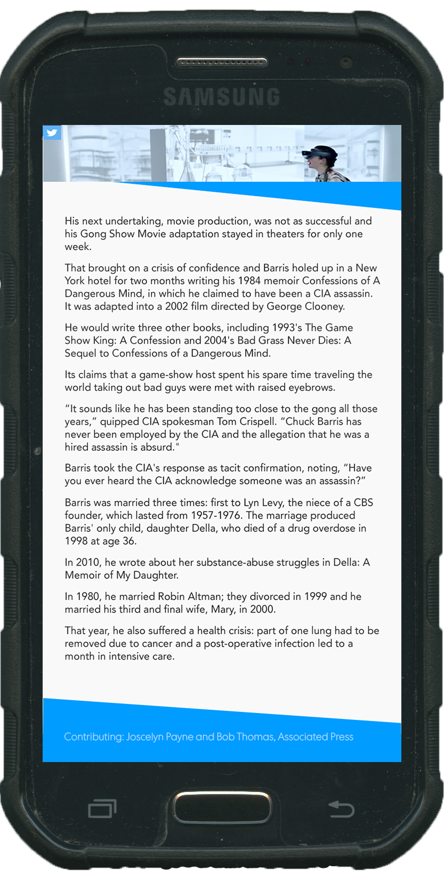
Final Product
Onboard
This is the homepage. The user is swipping the main article.
You can see the user swipping left and right. Yet, the direction of the swipping gose diagonal in
their respected direction.
Swip
This is the homepage. The user is swipping the main article.
You can see the user swipping left and right. Yet, the direction of the swipping gose diagonal in
their respected direction.
Tagging
This is the homepage. The user is swipping the main article.
You can see the user swipping left and right. Yet, the direction of the swipping gose diagonal in
their respected direction.
Article
This is the homepage. The user is swipping the main article.
You can see the user swipping left and right. Yet, the direction of the swipping gose diagonal in
their respected direction.